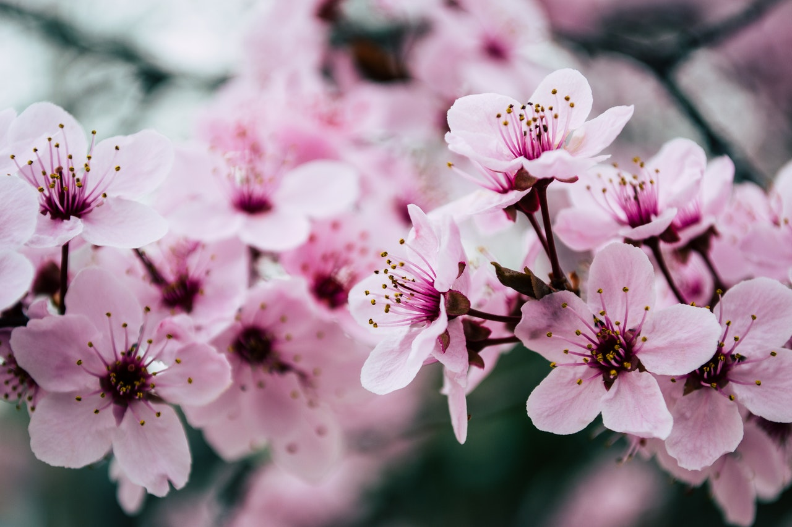
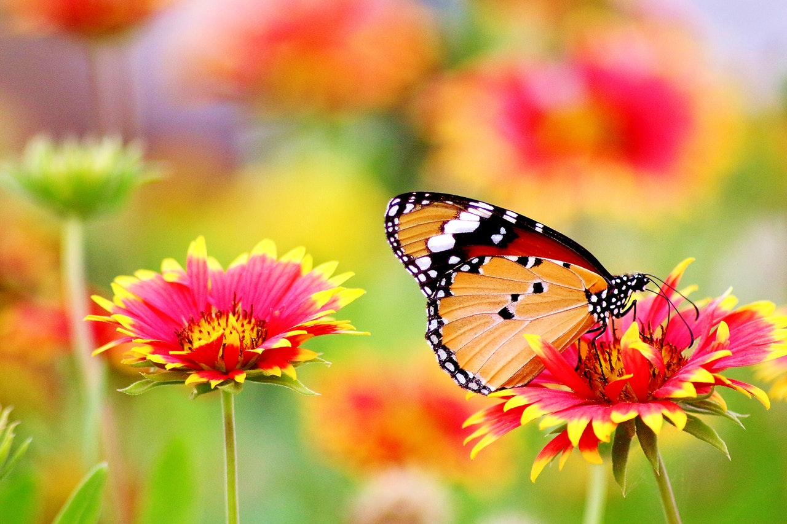
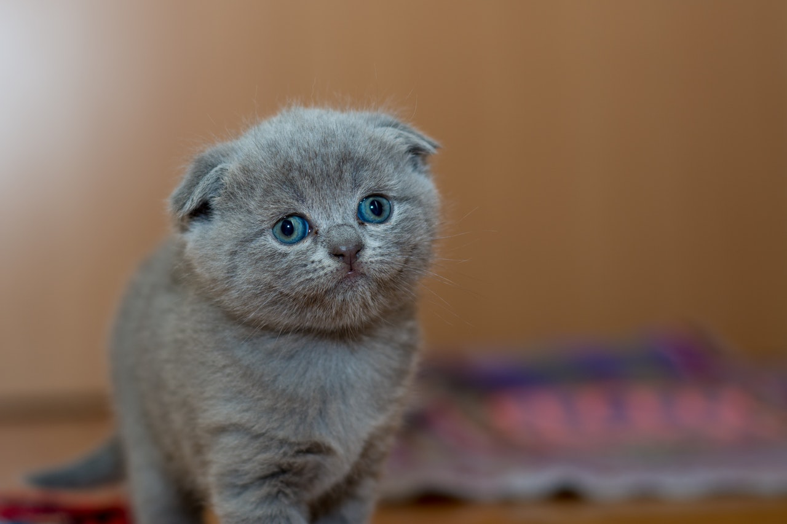
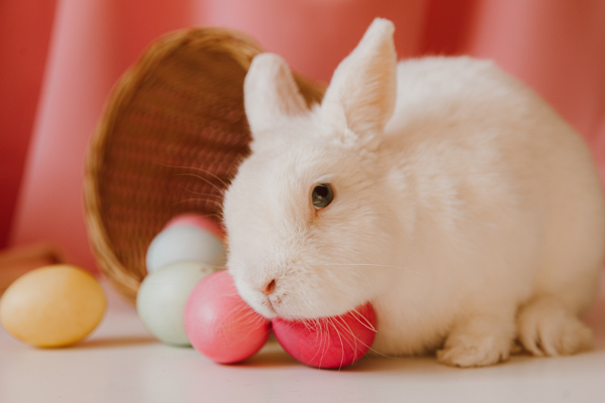
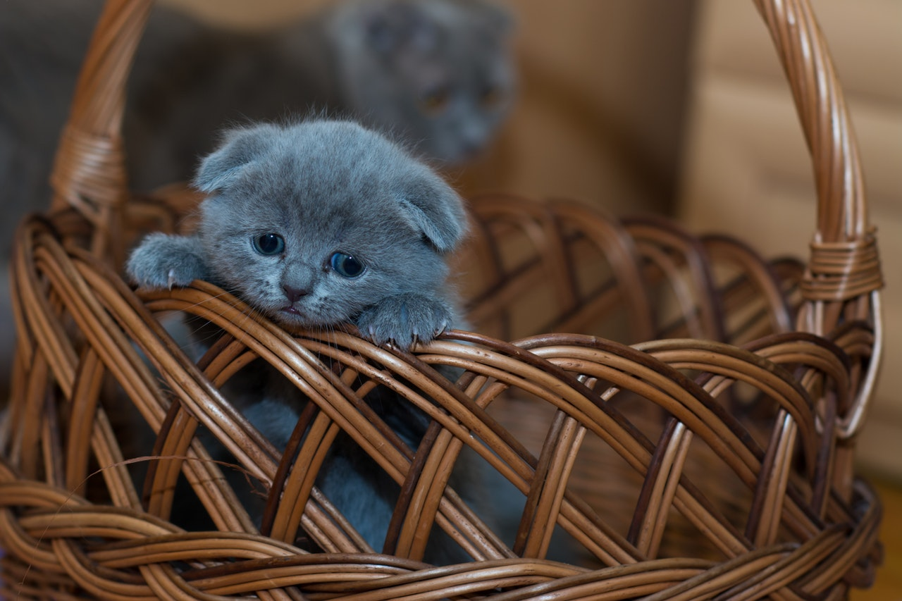
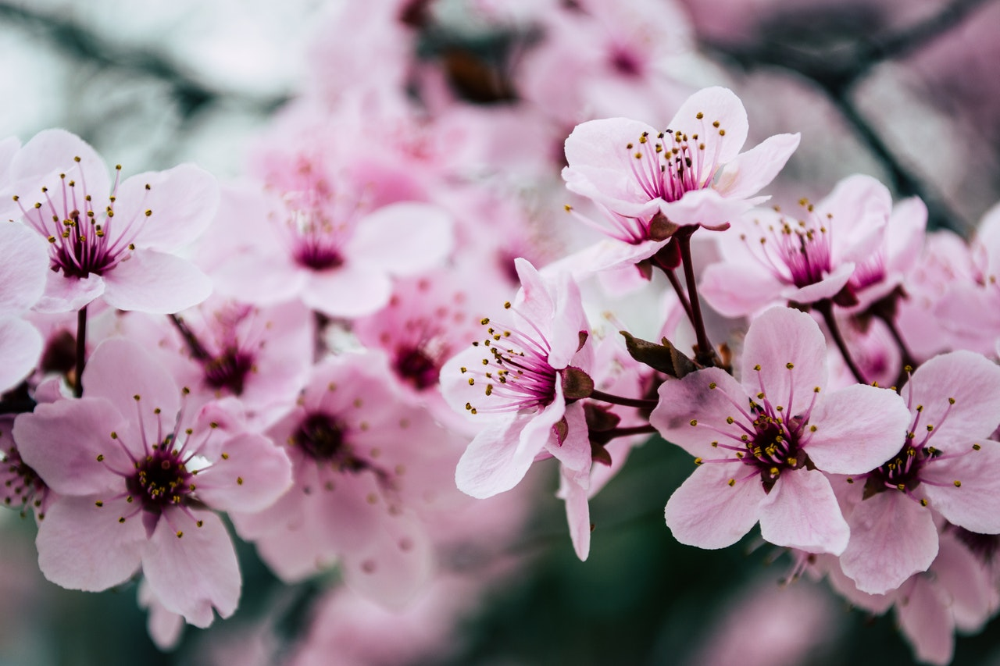
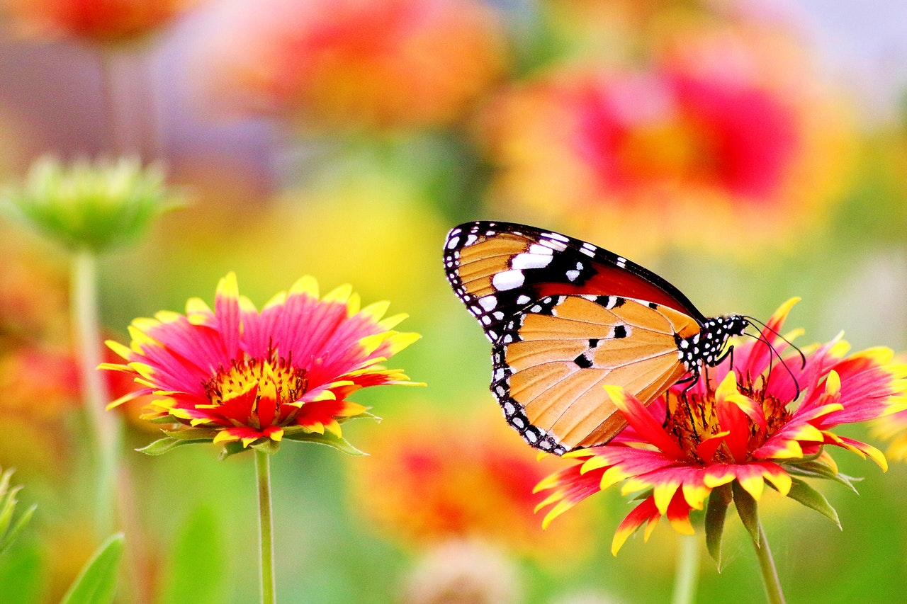
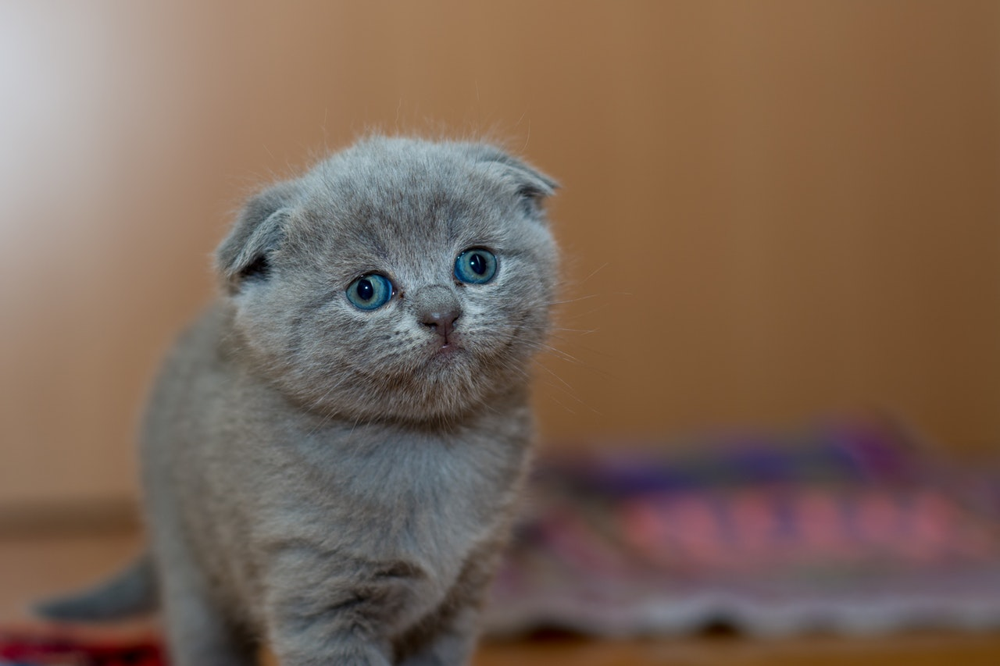
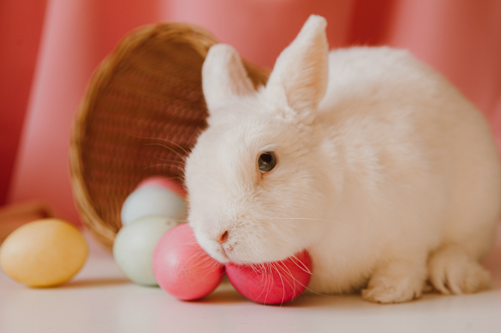
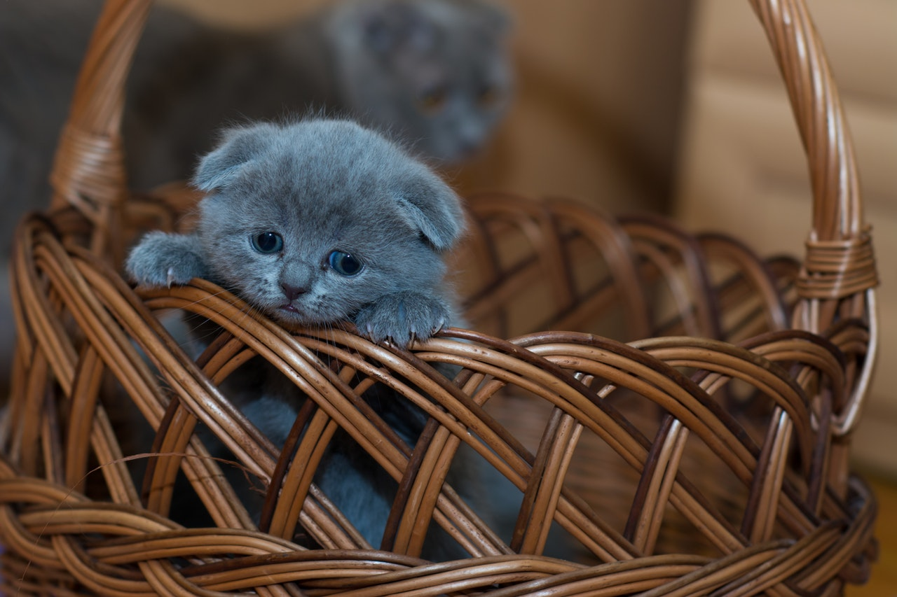

Fotografías de estudio
Breve historia del desarrollo de la fotografía.
Los primeros estudios propiamente dichos de la fotografía fueron descubiertos por Joseph Nicephore Niepce hacia 1825.
El descubrimiento del revelador cromógeno por R. Fisher desde 1911, ofreció a la fotografía en color una nueva dirección. Se había observado que algunos reveladores producían imágenes con un color dominante en lugar de un blanco y negro neutros.
¿Deseas ver más contenido? Selecciona una imagén y le das un click.


 








